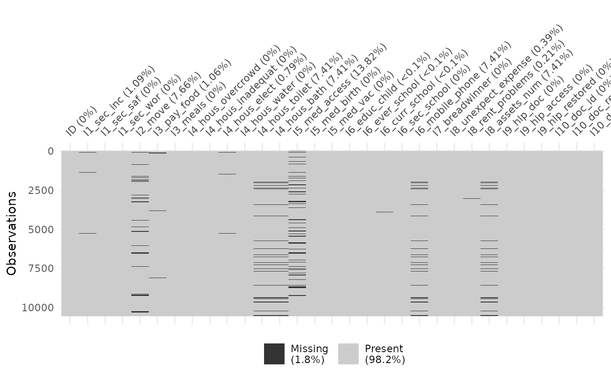
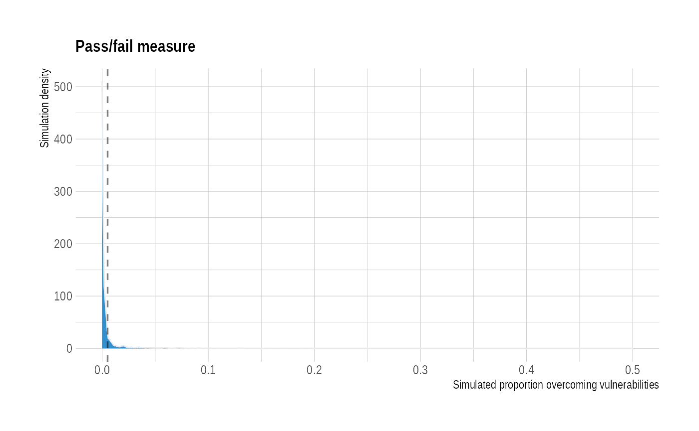
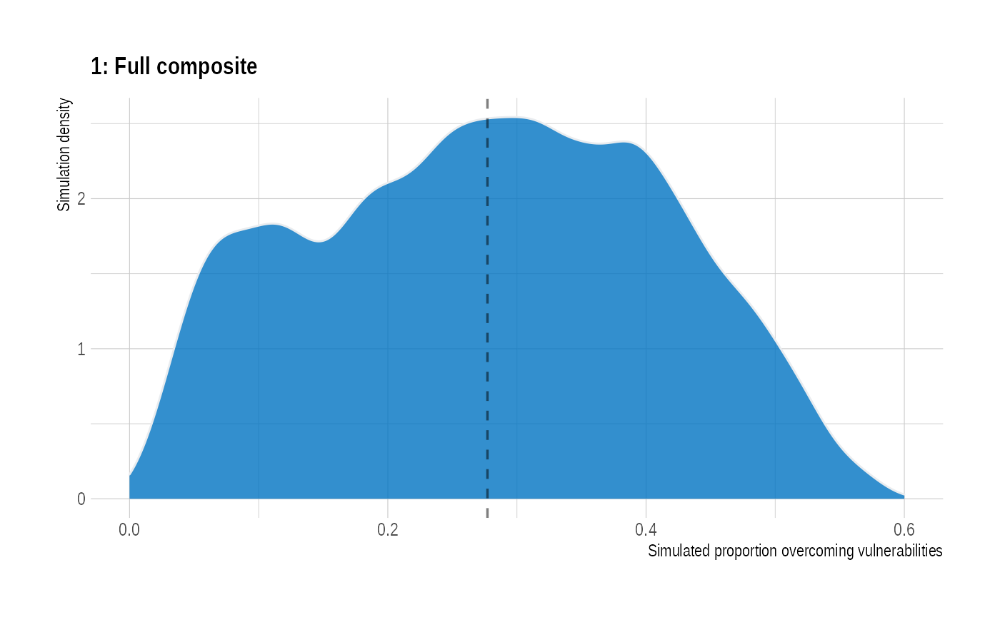
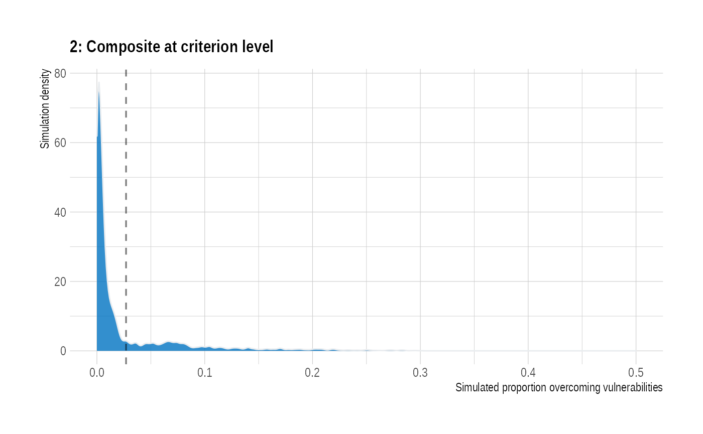
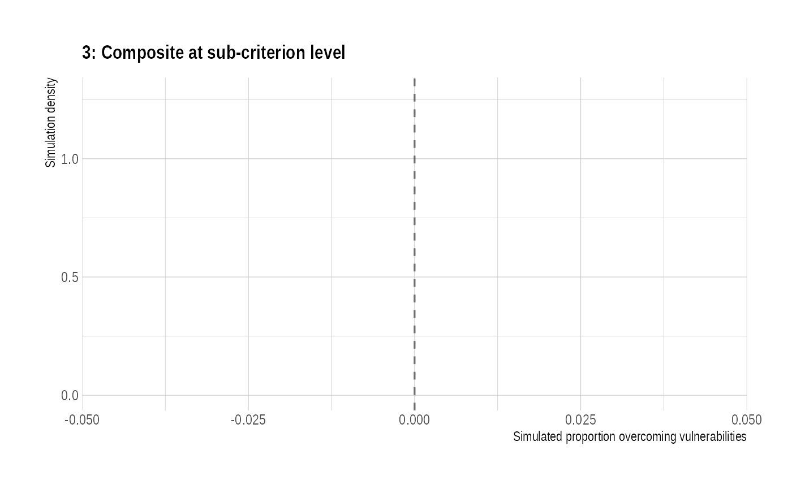
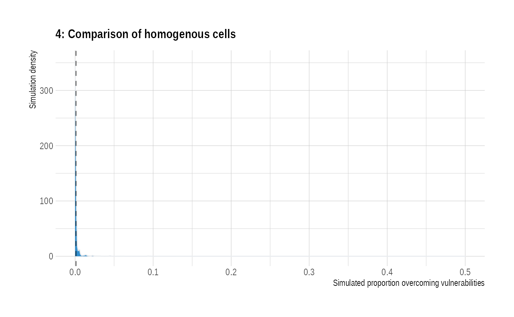
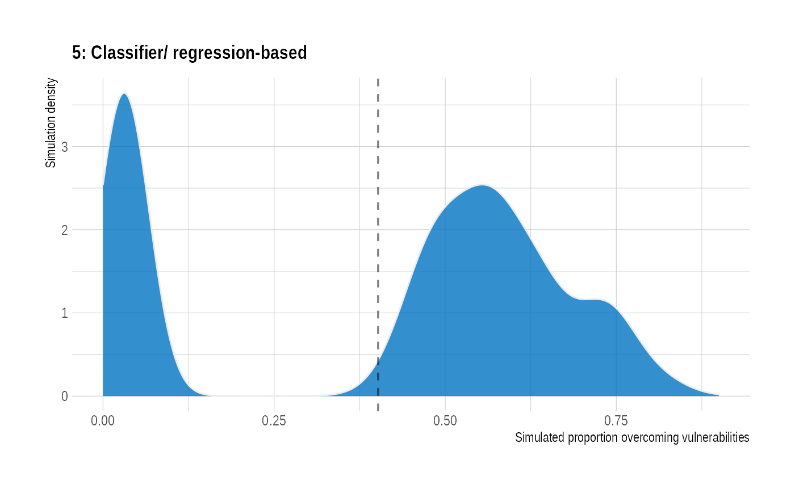
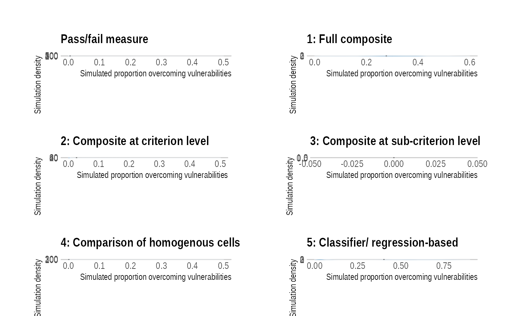
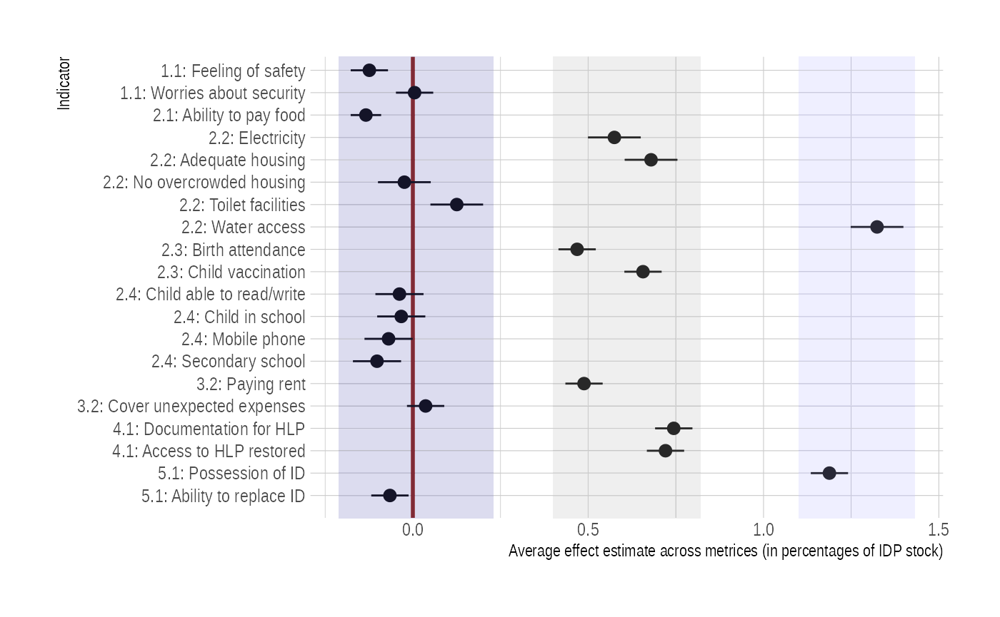

Hargeisa.Rmd
##########################################################
# Project:
# Author: Sigrid Weber (sweber1@worldbank.org)
# Last updated: November 3, 2020
##########################################################
# preparations ---------------------------------------------------------
# load required packages
library(tidyverse)## ── Attaching packages ─────────────────────────────────────── tidyverse 1.3.0 ──## ✓ ggplot2 3.3.3 ✓ purrr 0.3.4
## ✓ tibble 3.0.6 ✓ dplyr 1.0.4
## ✓ tidyr 1.1.2 ✓ stringr 1.4.0
## ✓ readr 1.4.0 ✓ forcats 0.5.1## ── Conflicts ────────────────────────────────────────── tidyverse_conflicts() ──
## x dplyr::filter() masks stats::filter()
## x dplyr::lag() masks stats::lag()## Loading required package: foreach##
## Attaching package: 'foreach'## The following objects are masked from 'package:purrr':
##
## accumulate, when## Loading required package: iterators## Loading required package: parallel
library(hrbrthemes)
library(patchwork)
library(DurableSolutionsSimulation)
# load functions
#source("functions.R")
# read data
#hargeisa <- read_xlsx("Data/Hargeisa.xlsx", sheet = 3)
hargeisa <- DurableSolutionsSimulation::hargeisa
# identify idps vs hosts
hargeisa <- hargeisa %>%
filter(hargeisa1 != "Refugee returnee") %>%
mutate(ID = ifelse(grepl("Displaced",hargeisa1)==T,1,0))
# identify potential IASC indicators for each subcriteria -------------
# 1.1 Victims of violence
hargeisa <- hargeisa %>%
mutate(
# Proportion experiencing a security incident
I1_sec_inc = case_when(
hargeisa127 == "No" ~ 0,
hargeisa127 == "Yes" ~ 1,
TRUE ~ NA_real_),
# Proportion feeling safe
I1_sec_saf = case_when(
hargeisa133 == "No" ~ 0,
hargeisa133 == "Yes" ~ 1,
grepl("Only to some extent",hargeisa133) == T ~ 0,
TRUE ~ NA_real_),
# Proportion worried about theft, crime, or vandalism
I1_sec_wor = case_when(
is.na(hargeisa135) == T ~ 0,
is.na(hargeisa136) == T ~ 0,
is.na(hargeisa135) == F ~ 1,
is.na(hargeisa136) == F ~ 1,
TRUE ~ NA_real_
)
)
# 1.2. Freedom of movement
hargeisa <- hargeisa %>%
mutate(
# Problems visiting public places
I2_move = case_when(
hargeisa137 == "No" ~ 0,
hargeisa137 == "Yes" ~ 1,
TRUE ~ NA_real_)
)
# 2.1. Food security
hargeisa <- hargeisa %>%
mutate(
# Inability to pay for food
I3_pay_food = case_when(
hargeisa52 == "No" ~ 0,
hargeisa52 == "Yes" ~ 1,
TRUE ~ NA_real_),
# Number of meals per day
I3_meals = hargeisa59)
# 2.2 Shelter and housing
hargeisa <- hargeisa %>%
mutate(
# Proportion living in overcrowded housing/shelter (> X persons per room)
I4_hous_overcrowd = ifelse(hargeisa14 > hargeisa103, 1, 0),
# Proportion living in inadequate housing conditions (risk zones)
I4_hous_inadequat = ifelse(hargeisa121 == "Yes"|
hargeisa122 == "Yes"|
hargeisa123 == "Yes", 1, 0),
# Proportion having access to electricity
I4_hous_elect = case_when(
hargeisa124 == "Yes" ~ 1,
hargeisa124 == "No" ~ 0,
TRUE ~ NA_real_),
# Proportion getting their drinking water from tank
I4_hous_water = ifelse(hargeisa126 == "Tank", 1, 0),
# Proportion having flushing toilet in household
I4_hous_toilet = ifelse(hargeisa109 == "Yes",1,0),
# Proportion having bath/shower in household
I4_hous_bath = ifelse(hargeisa108 == "Yes",1,0)
)
# 2.3 Medical services
hargeisa <- hargeisa %>%
mutate(
# Proportion with access to essential health care when needed.
I5_med_access = case_when(
hargeisa67 == "Yes" & hargeisa73 == "Yes" ~ 1,
hargeisa67 != "Yes" & hargeisa73 == "No" ~ 0,
hargeisa67 == "No" ~ 0,
TRUE ~ NA_real_
),
# Births attended by skilled health personnel within
I5_med_birth = case_when(
hargeisa92 %in% c("Clinic","Hospital") ~ 1,
hargeisa92 %in% c("Home","Other") ~ 0,
hargeisa93 %in% c("Doctor","Nurse/midwife") ~ 1,
hargeisa93 %in% c("Family member","Traditional birth attendant") ~ 0,
TRUE ~ 1
),
# Child vaccinated
I5_med_vac= case_when(
hargeisa62 == "Yes" ~ 1,
hargeisa62 == "No" ~ 0,
hargeisa62 == "Don't know" ~ 0,
is.na(hargeisa62) == T ~ 1,
TRUE ~ NA_real_
))
# 2.4 Education
hargeisa <- hargeisa %>%
mutate(
# Proportion children (5-17) is able to read
I6_educ_child = case_when(hargeisa36 == "Yes" ~ 1,
hargeisa36 == "No" ~ 0,
is.na(hargeisa36)== T ~ 1),
# Proportion children (5-17) ever attending school
I6_ever_school = case_when(hargeisa37 == "Yes" ~ 1,
hargeisa37 == "No" ~ 0,
is.na(hargeisa37)== T ~ 1),
# Proportion children (5-17) currently attending school
I6_curr_school = case_when(hargeisa39 == "Yes" ~ 1,
hargeisa39 == "No" ~ 0,
is.na(hargeisa39)== T ~ 1),
# proportion children (5-17) attending secondary school
I6_sec_school = case_when(
hargeisa40 %in% c("Secondary school","University")~1,
hargeisa38 %in% c("Secondary school","University")~1,
is.na(hargeisa$hargeisa40) == T ~ 1,
is.na(hargeisa$hargeisa38) == T ~ 1,
TRUE ~ 0),
# Proportion owning a mobile phone
I6_mobile_phone = ifelse(hargeisa111 == "Yes",1,0)
)
# 3.1 Employment and livelihoods
hargeisa <- hargeisa %>%
mutate(
# Breadwinner in the family
I7_breadwinner = ifelse(hargeisa166 > 0, 1, 0))
# 3.2 Economic security
hargeisa <- hargeisa %>%
mutate(
# Proportion capable of unexpected expenses without borrowing money
I8_unexpect_expense = ifelse(hargeisa60 == "No",1,0),
# Proportion experiencing difficulties paying rent
I8_rent_problems = case_when(
hargeisa100 == "Tenant" & hargeisa101 == "Yes" ~ 1,
hargeisa100 == "Tenant" & hargeisa101 == "No" ~ 0,
hargeisa100 != "Tenant" ~ 0,
TRUE ~ NA_real_
),
# Average number of assets
I8_assets_num =
ifelse(hargeisa105 == "Yes",1,0)+
ifelse(hargeisa106 == "Yes",1,0)+
ifelse(hargeisa107 == "Yes",1,0)+
ifelse(hargeisa108 == "Yes",1,0)+
ifelse(hargeisa109 == "Yes",1,0)+
ifelse(hargeisa110 == "Yes",1,0)+
ifelse(hargeisa111 == "Yes",1,0)
)
# 4.1 Property restitution and compensation
hargeisa <- hargeisa %>%
mutate(
# Proportion with documents to prove ownership of property left behind
I9_hlp_doc =
case_when(
ID == 0 ~ 1,
ID == 1 & hargeisa118 == "Yes" ~ 1,
ID == 1 & hargeisa118 != "Yes" ~ 0,
hargeisa114 == "No" ~ 1,
TRUE ~ NA_real_),
# Proportion with access to compensation mechanisms
I9_hlp_access =
case_when(
ID == 0 ~ 1,
ID == 1 & grepl("Yes",hargeisa119)==T ~ 1,
ID == 1 & grepl("Yes",hargeisa119)==F ~ 0,
hargeisa114 == "No" ~ 1,
TRUE ~ NA_real_),
# Proportion with effective restoration or compensation
I9_hlp_restored =
case_when(
ID == 0 ~ 1,
ID == 1 & hargeisa120 == "Yes" ~ 1,
ID == 1 & hargeisa120 != "Yes" ~ 0,
hargeisa114 == "No" ~ 1,
TRUE ~ NA_real_)
)
# 5.1. Documentation
hargeisa <- hargeisa %>%
mutate(
# Proportion with documents to prove identity
I10_doc_id = ifelse(hargeisa42 == "Has a certificate"|
hargeisa44 == "Yes" |
hargeisa45 == "Yes" |
hargeisa46 == "Yes", 1, 0),
# Proportion with documents or access to replace missing documents if lost
I10_doc_replace = case_when(
hargeisa42 == "Has a certificate" ~ 1,
hargeisa42 == "Never registered" ~ 0,
hargeisa42 == "Registered at birth but no certificate" ~ 0,
hargeisa44 == "Yes" ~ 1,
hargeisa44 == "No" ~ 0,
hargeisa45 == "Yes" ~ 1,
hargeisa45 == "No" ~ 0,
hargeisa46 == "Yes" ~ 1,
hargeisa46 == "No" ~ 0,
hargeisa50 == "Yes" ~ 1,
hargeisa50 == "No" ~ 0,
TRUE ~ NA_real_),
# Proportion having a birth certificate
I10_doc_birth = ifelse(hargeisa42 == "Has a certificate"|
hargeisa42 == "Registered at birth but no certificate", 1,0)
)
# prepare dataset for simulations -----------------------------------------------
# unify direction of indicators: 1 for passing
hargeisa <- hargeisa %>%
mutate(
I1_sec_inc = ifelse(I1_sec_inc == 1, 0,1),
I1_sec_saf = ifelse(I1_sec_saf == 1, 1,0),
I1_sec_wor = ifelse(I1_sec_wor == 1, 0,1),
I2_move = ifelse(I2_move == 1, 0,1),
I3_pay_food = ifelse(I3_pay_food == 1, 0,1),
I3_meals = ifelse(I3_meals < mean(I3_meals, na.rm = T), 0,1),
I4_hous_overcrowd = ifelse(I4_hous_overcrowd ==1, 0, 1),
I4_hous_inadequat = ifelse(I4_hous_inadequat ==1, 0, 1),
I4_hous_elect = ifelse(I4_hous_elect == 1, 1, 0),
I4_hous_water = ifelse(I4_hous_water ==1, 1, 0),
I4_hous_toilet = ifelse(I4_hous_toilet == 1 , 1, 0),
I4_hous_bath = ifelse(I4_hous_bath == 1 , 1, 0),
I5_med_access = ifelse(I5_med_access ==1, 1, 0),
I5_med_birth = ifelse(I5_med_birth == 1, 1, 0),
I5_med_vac = ifelse(I5_med_vac == 1, 1, 0),
I6_educ_child = ifelse(I6_educ_child ==1, 1, 0),
I6_ever_school = ifelse(I6_ever_school == 1, 1, 0),
I6_curr_school = ifelse(I6_curr_school == 1, 1, 0),
I6_sec_school = ifelse(I6_sec_school ==1, 1, 0),
I6_mobile_phone = ifelse(I6_mobile_phone == 1, 1, 0),
I7_breadwinner = ifelse(I7_breadwinner ==1, 1, 0),
I8_unexpect_expense = ifelse(I8_unexpect_expense == 1, 1, 0),
I8_rent_problems = ifelse(I8_rent_problems == 1, 0, 1),
I8_assets_num = ifelse(I8_assets_num >= mean(I8_assets_num, na.rm= T), 1, 0),
I9_hlp_doc = ifelse(I9_hlp_doc ==1, 1, 0),
I9_hlp_access = ifelse(I9_hlp_access ==1, 1, 0),
I9_hlp_restored = ifelse(I9_hlp_restored ==1, 1, 0),
I10_doc_id = ifelse(I10_doc_id ==1, 1, 0),
I10_doc_replace = ifelse(I10_doc_replace == 1, 1, 0),
I10_doc_birth = ifelse(I10_doc_birth == 1, 1, 0)
)
# save a version for later use in script
hargeisa_raw <- hargeisa
hargeisa <- hargeisa %>% select(starts_with("I"))
# see for how many no assessment is possible
naniar::vis_miss(hargeisa)
# SIMULATIONS ############################################
# Original framework ----------------------------------------------------------
# define the indicators
indicators <- list(
I1 = names(hargeisa %>% select(contains("I1_"))),
I2 = names(hargeisa %>% select(contains("I2_"))),
I3 = names(hargeisa %>% select(contains("I3_"))),
I4 = names(hargeisa %>% select(contains("I4_"))),
I5 = names(hargeisa %>% select(contains("I5_"))),
I6 = names(hargeisa %>% select(contains("I6_"))),
I7 = names(hargeisa %>% select(contains("I7_"))),
I8 = names(hargeisa %>% select(contains("I8_"))),
I9 = names(hargeisa %>% select(contains("I9_"))),
I10 = names(hargeisa %>% select(contains("I10_")))
)
# identify all possible combinations
combinations <- expand.grid(indicators)%>%
mutate_all(~as.character(.))
# Identify durable solution according to IRIS framework
Durable_Solutions <- sapply(1:nrow(combinations),
data = hargeisa, # Dataset
sim_data = combinations, # Dataset of possible indicator combinations
DurableSolutionsSimulation::use_IRIS_metric # Function
)
# Save for analysis and plotting
DS_original <- combinations %>%
mutate(DS = Durable_Solutions,
DS_perc = DS/ nrow(hargeisa))
# Plot result
plot_original <- DS_original %>%
ggplot(aes(x=DS_perc))+
geom_density(fill="#0073C2FF", color="#e9ecef", alpha=0.8)+
theme_ipsum(plot_title_size = 13, base_size = 10)+
geom_vline(aes(xintercept = mean(DS_perc)),
linetype = "dashed", size = 0.6, alpha = 0.5)+
ggtitle("Pass/fail measure")+
xlab("Simulated proportion overcoming vulnerabilities")+
ylab("Simulation density")+
xlim(0,0.5)
plot_original
# Option 1: Full composite ---------------------------------------------------
Durable_Solutions <- sapply(1:nrow(combinations),
data = hargeisa,
sim_data = combinations,
benchmark = benchmarks,
DurableSolutionsSimulation::use_composite)
DS_option1 <- combinations %>%
mutate(DS = Durable_Solutions,
DS_perc = DS/ nrow(hargeisa))
# Plot result
plot_option1 <- DS_option1 %>%
ggplot(aes(x=DS_perc))+
geom_density(fill="#0073C2FF", color="#e9ecef", alpha=0.8)+
theme_ipsum(plot_title_size = 13, base_size = 10)+
geom_vline(aes(xintercept = mean(DS_perc)),
linetype = "dashed", size = 0.6, alpha = 0.5)+
ggtitle("1: Full composite")+
xlab("Simulated proportion overcoming vulnerabilities")+
ylab("Simulation density")+
xlim(0,0.6)
plot_option1
# Option 2: composite indices at the criterion level ###########################################
Durable_Solutions <- sapply(1:nrow(combinations),
data = hargeisa,
sim_data = combinations,
benchmark = benchmarks,
DurableSolutionsSimulation::use_criterion)
DS_option2 <- combinations %>%
mutate(DS = Durable_Solutions,
DS_perc = DS/ nrow(hargeisa))
# Plot result
plot_option2 <- DS_option2 %>%
ggplot(aes(x=DS_perc))+
geom_density(fill="#0073C2FF", color="#e9ecef", alpha=0.8)+
theme_ipsum(plot_title_size = 13, base_size = 10)+
geom_vline(aes(xintercept = mean(DS_perc)),
linetype = "dashed", size = 0.6, alpha = 0.5)+
ggtitle("2: Composite at criterion level")+
xlab("Simulated proportion overcoming vulnerabilities")+
ylab("Simulation density")+
xlim(0,0.5)
plot_option2
# Option 3: composite indices at the subcriterion level ###########################################
# define indices for the levels with few indicators available
hargeisa <- hargeisa %>%
mutate(
I1 = I1_sec_inc + I1_sec_saf + I1_sec_wor,
I2 = I2_move,
I3 = I3_pay_food + I3_meals,
I5 = I5_med_access + I5_med_birth + I5_med_vac,
I7 = I7_breadwinner,
I8 = I8_unexpect_expense + I8_rent_problems + I8_assets_num,
I9 = I9_hlp_doc + I9_hlp_access + I9_hlp_restored,
I10 = I10_doc_id + I10_doc_replace + I10_doc_birth)
benchmarks <- benchmarks %>%
mutate(
I1 = I1_sec_inc + I1_sec_saf + I1_sec_wor,
I2 = I2_move,
I3 = I3_pay_food + I3_meals,
I5 = I5_med_access + I5_med_birth + I5_med_vac,
I7 = I7_breadwinner,
I8 = I8_unexpect_expense + I8_rent_problems + I8_assets_num,
I9 = I9_hlp_doc + I9_hlp_access + I9_hlp_restored,
I10 = I10_doc_id + I10_doc_replace + I10_doc_birth)
# define the new indicators
indicators_sub <- list(
index4 = apply((combn(names(hargeisa %>% select(contains("I4_"))),3)) %>%
t(),1, paste,collapse= ";"),
index6 = apply((combn(names(hargeisa %>% select(contains("I6_"))),3)) %>%
t(),1, paste,collapse= ";")
)
# define the new combinations
combinations <- expand.grid(indicators_sub)%>%
mutate_all(~as.character(.)) %>%
separate(col = index4, into = c("I4_Index_1", "I4_Index_2","I4_Index_3"), sep = ";") %>%
separate(col = index6, into = c("I6_Index_1", "I6_Index_2","I6_Index_3"), sep = ";") %>%
mutate(I1 = "I1",I2 = "I2",I3 = "I3",I5 = "I5",I7 = "I7",I8 = "I8", I9 = "I9", I10 = "I10")
# run parallel as otherwise slow
cl <- parallel::makeCluster(parallel::detectCores())
registerDoParallel(cl)
Durable_Solutions <- foreach(i = 1:nrow(combinations),
.packages = "tidyverse") %dopar% {
DurableSolutionsSimulation::use_subcriterion(x = i,
data = hargeisa,
sim_data = combinations,
benchmark = benchmarks)
}
stopCluster(cl)
Durable_Solutions <- unlist(Durable_Solutions)
DS_option3 <- combinations %>%
mutate(DS = Durable_Solutions,
DS_perc = DS/ nrow(hargeisa))
# Plot result
plot_option3 <- DS_option3 %>%
ggplot(aes(x=DS_perc))+
geom_density(fill="#0073C2FF", color="#e9ecef", alpha=0.8)+
theme_ipsum(plot_title_size = 13, base_size = 10)+
geom_vline(aes(xintercept = mean(DS_perc)),
linetype = "dashed", size = 0.6, alpha = 0.5)+
ggtitle("3: Composite at sub-criterion level")+
xlab("Simulated proportion overcoming vulnerabilities")+
ylab("Simulation density")
plot_option3
# Option 4: Comparison of homogenous cells ###########################################
cells <- hargeisa_raw %>%
mutate(disp_type = hargeisa1,
gender = hargeisa3,
origin_district = ifelse(is.na(hargeisa7)==T, "Unknown", hargeisa7),
clan = ifelse(is.na(hargeisa13)==T, "Unknown", hargeisa13),
depart_yr = case_when(
hargeisa28 <= 1990 ~ "Before 1990",
hargeisa28 > 1990 & hargeisa28 <= 2000 ~ "Between 1990 and 2000",
hargeisa28 > 2000 & hargeisa28 <= 2010 ~ "Between 2000 and 2010",
hargeisa28 > 2010 ~ "After 2010",
TRUE ~ "Unknown")) %>%
select(-contains("hargeisa"))
benchmarks <- cells %>%
filter(ID == 0)%>%
select(starts_with("I")) %>%
summarise_all(.,mean,na.rm = T)
cells <- cells %>% filter(ID == 1)
# define cell options
combinations <- apply((combn(names(cells %>% select(-starts_with("I"))),3)) %>% t(),1, paste,collapse= ";")%>%
expand.grid()%>%
mutate_all(~as.character(.)) %>%
separate(col = Var1, into = c("cell_1", "cell_2","cell_3"), sep = ";")
combinations1 <- expand.grid(indicators)%>%
mutate_all(~as.character(.))
set.seed(2020)
combinations1 <- sample_n(combinations1, 4000)
# run simulation
cl <- parallel::makeCluster(parallel::detectCores())
registerDoParallel(cl)
Durable_Solutions <- foreach(i = 1:nrow(combinations1), .packages = "tidyverse") %dopar% {
sapply(1:nrow(combinations),
y=i,
data = cells,
combination_cells= combinations,
combination_indicators=combinations1,
benchmark= benchmarks,
DurableSolutionsSimulation::use_cells)
}
stopCluster(cl)
# make the indicators dataframe
DS_option4_ind <- data.frame(matrix(unlist(Durable_Solutions),
nrow=length(Durable_Solutions),
byrow=T))
names(DS_option4_ind) <- paste0("DS_",1:10)
DS_option4_ind <- cbind(combinations1,DS_option4_ind)
DS_option4_ind <- DS_option4_ind %>%
pivot_longer(.,cols= starts_with("DS_"),values_to = "DS", names_to = "iteration")%>%
mutate( DS_perc = DS/ nrow(hargeisa))
# make the cell indicator dataframe
DS_option4_cells <- cbind(
combinations,
data.frame(matrix(unlist(Durable_Solutions), nrow=10, byrow=F)))
DS_option4_cells <- DS_option4_cells%>%
pivot_longer(.,cols= starts_with("X"),values_to = "DS", names_to = "iteration") %>%
mutate( DS_perc = DS/ nrow(hargeisa))
# Plot result
plot_option4 <- DS_option4_cells %>%
ggplot(aes(x=DS_perc))+
geom_density(fill="#0073C2FF", color="#e9ecef", alpha=0.8)+
theme_ipsum(plot_title_size = 13, base_size = 10)+
geom_vline(aes(xintercept = mean(DS_perc)),
linetype = "dashed", size = 0.6, alpha = 0.5)+
ggtitle("4: Comparison of homogenous cells")+
xlab("Simulated proportion overcoming vulnerabilities")+
ylab("Simulation density")+
xlim(0,0.5)
plot_option4
# Option 5: Use a classifier ------------------------------------------------------------
# define the indicators
indicators <- list(
I1 = names(hargeisa_raw %>% select(contains("I1_"))),
I2 = names(hargeisa_raw %>% select(contains("I2_"))),
I3 = names(hargeisa_raw %>% select(contains("I3_"))),
I4 = names(hargeisa_raw %>% select(contains("I4_"))),
I5 = names(hargeisa_raw %>% select(contains("I5_"))),
I6 = names(hargeisa_raw %>% select(contains("I6_"))),
I7 = names(hargeisa_raw %>% select(contains("I7_"))),
I8 = names(hargeisa_raw %>% select(contains("I8_"))),
I9 = names(hargeisa_raw %>% select(contains("I9_"))),
I10 = names(hargeisa_raw %>% select(contains("I10_")))
)
# identify all possible combinations
combinations <- expand.grid(indicators)%>%
mutate_all(~as.character(.))
# Identify durable solution
# run parallel as otherwise slow
cl <- parallel::makeCluster(parallel::detectCores())
registerDoParallel(cl)
Durable_Solutions <- foreach(i = 1:nrow(combinations),
.packages = "tidyverse") %dopar% {
DurableSolutionsSimulation::use_classifier(x = i,
data = hargeisa_raw,
sim_data = combinations)
}
stopCluster(cl)
Durable_Solutions <- unlist(Durable_Solutions)
# Save for analysis and plotting
DS_Option5 <- combinations %>%
mutate(DS = Durable_Solutions,
DS_perc = DS/ nrow(hargeisa))
# Plot result
plot_option5 <- DS_Option5 %>%
ggplot(aes(x=DS_perc))+
geom_density(fill="#0073C2FF", color="#e9ecef", alpha=0.8)+
theme_ipsum(plot_title_size = 13, base_size = 10)+
geom_vline(aes(xintercept = mean(DS_perc)),
linetype = "dashed", size = 0.6, alpha = 0.5)+
ggtitle("5: Classifier/ regression-based")+
xlab("Simulated proportion overcoming vulnerabilities")+
ylab("Simulation density")+
xlim(0,0.9)
plot_option5
# VISUALIZATION ########################################
(plot_original + plot_option1) /
(plot_option2 + plot_option3)/
(plot_option4 + plot_option5)
# ggsave("inst/Hargeisa_option.png", width = 11, height = 8)
indicator_data <- data.frame(
term = model$term,
estimate =
sapply(1:20,
function(x){
mean(model$estimate[x],model1$estimate[x],model2$estimate[x],
model4$estimate[x],model5$estimate[x])}),
ymin =
sapply(1:20,
function(x){
mean(model$ymin[x],model1$ymin[x],model2$ymin[x],
model4$ymin[x],model5$ymin[x])}),
ymax =
sapply(1:20,
function(x){
mean(model$ymax[x],model1$ymax[x],model2$ymax[x],
model4$ymax[x],model5$ymax[x])})
)%>%
mutate(term = factor(term, levels=rev(term), ordered=TRUE)) %>%
mutate(term1 =
c("1.1: Feeling of safety","1.1: Worries about security",
"2.1: Ability to pay food",
"2.2: Electricity", "2.2: Adequate housing", "2.2: No overcrowded housing", "2.2: Toilet facilities", "2.2: Water access",
"2.3: Birth attendance", "2.3: Child vaccination",
"2.4: Child able to read/write", "2.4: Child in school", "2.4: Mobile phone", "2.4: Secondary school",
"3.2: Paying rent", "3.2: Cover unexpected expenses",
"4.1: Documentation for HLP", "4.1: Access to HLP restored",
"5.1: Possession of ID", "5.1: Ability to replace ID"
))%>%
mutate(term1 = factor(term1, levels=rev(term1), ordered=TRUE))
ggplot(indicator_data,
aes(x=term1, y=estimate)) +
geom_hline(yintercept=0, colour="#8C2318", size=1) + # Line at 0
geom_pointrange(aes(ymin=ymin, ymax=ymax)) +
labs(x="Indicator", y="Average effect estimate across metrices (in percentages of IDP stock)") + # Labels
viridis::scale_color_viridis(discrete = TRUE)+
geom_rect(aes(ymin=0.4, ymax= 0.82, xmin=0, xmax=Inf),
fill= "lightskyblue3",
alpha = 0.01) +
geom_rect(aes(ymin=-0.21, ymax= 0.23, xmin=0, xmax=Inf),
fill= "lightskyblue4",
alpha = 0.01) +
geom_rect(aes(ymin=1.1, ymax= 1.43, xmin=0, xmax=Inf),
fill= "lightskyblue",
alpha = 0.01) +
coord_flip() + # Rotate the plot
theme_ipsum(plot_title_size = 13, base_size = 10)+
theme(legend.position = "none")
#ggsave("inst/Hargeisa_indicators.png",width = 8, height = 5)